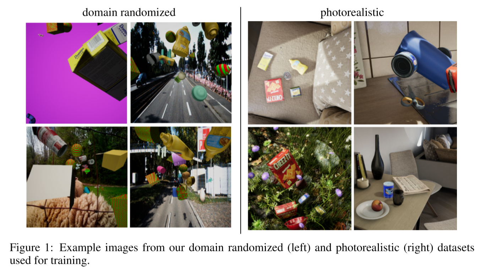
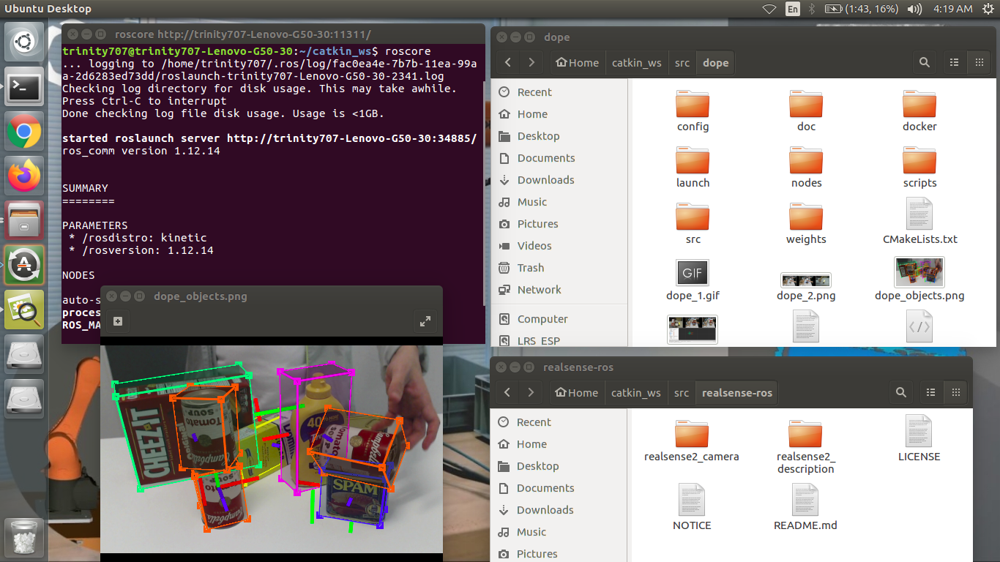

Continuation of state of the art
On the last weeks, i learned abot the domain randomization, in which the training data is randomized in non-realistic ways so that, at test time, real data appears to the net- work as simply another variation. Regarding this in a paper, i explored a powerful complement to domain randomization (DR) namely, using photorealistic data. They show that a simple combination of DR data with such photorealistic data yields sufficient variation and complexity to train a deep neural network that is then able to operate on real data without any fine-tuning. Additionally, their synthetically trained network generalizes well to a variety of real-world scenarios, including various backgrounds and extreme lighting conditions.

Their contributions are thus as follows:
Now the authors of this paper produced this pose estimation algorithm which is called DOPE which stands for Deep object Pose Estimation. This is a state of art pose estimation and we decided to use this mainly for our research. So that we can focus on eliminating other problems not just about the concept of pose estimation and its mathematics.
DOPE (Deep Object Pose Estimation) code implementing in ROS Enviornment
They propose a two-step solution to address the problem of detecting and estimating the 6-DoF pose of all instances of a set of known household objects from a single RGB image first, a deep neural network estimates belief maps of 2D keypoints of all the objects in the image coordinate system. Secondly, peaks from these belief maps are fed to a standard perspective-n-point (PnP) algorithm to estimate the 6-DoF pose of each object instance
This is the official DOPE ROS package for detection and 6-DoF pose estimation of known objects from an RGB camera. The network has been trained default on the following YCB objects: cracker box, sugar box, tomato soup can, mustard bottle, potted meat can, and gelatin box.
Followed the instructions and installed successfullyin my system.
